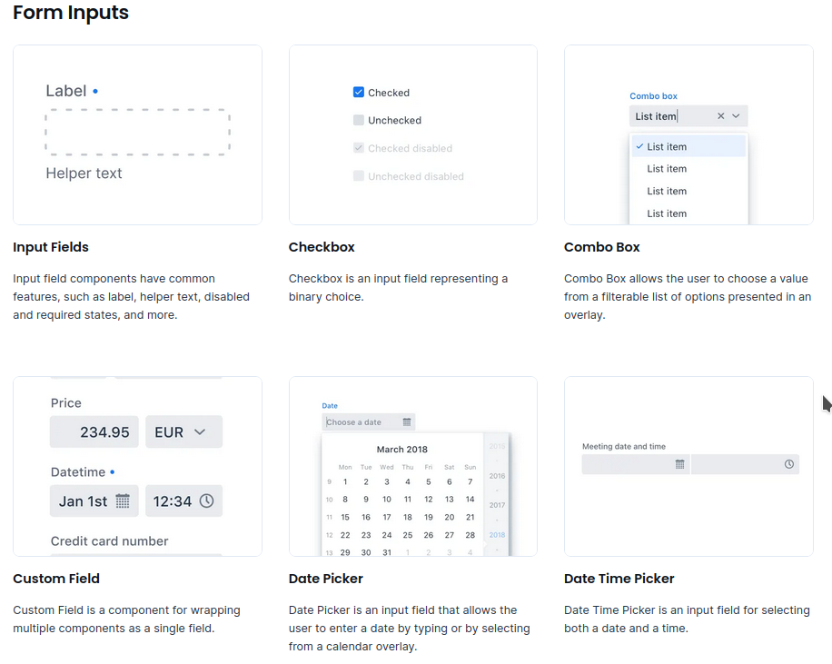
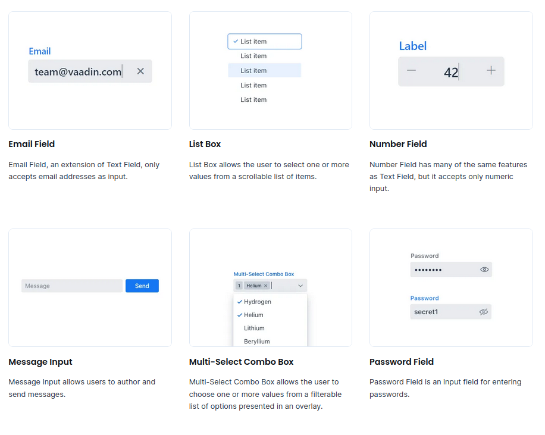
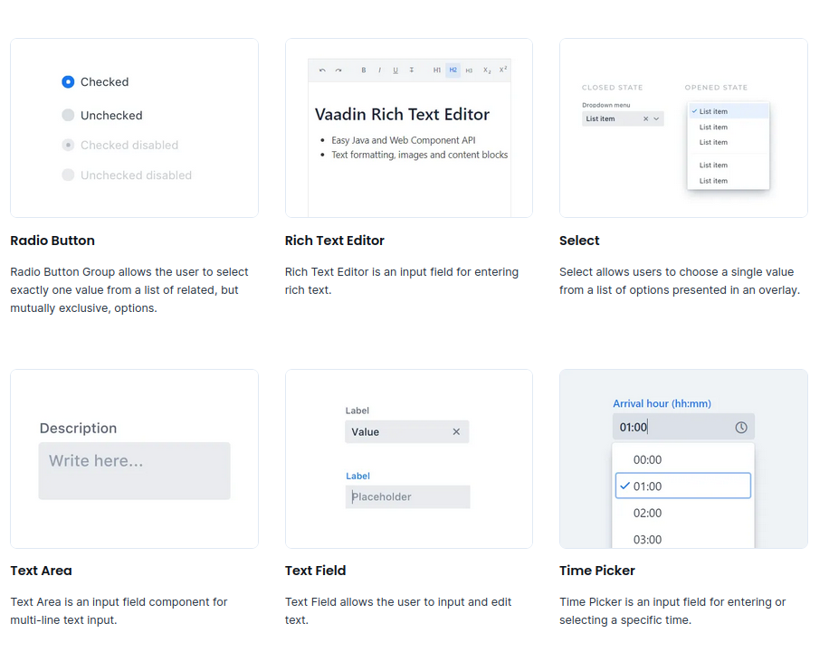
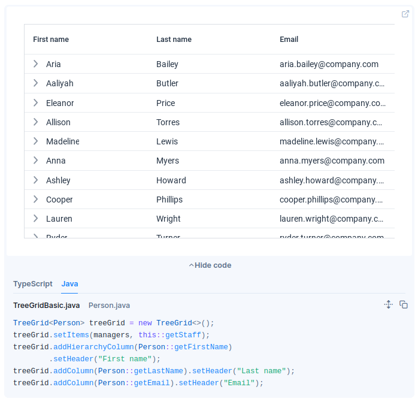
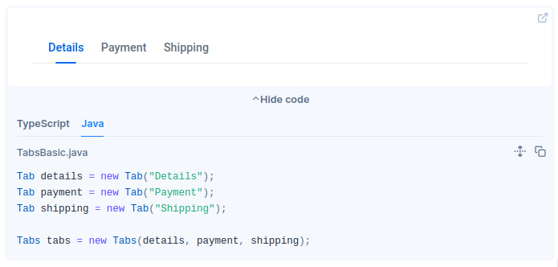
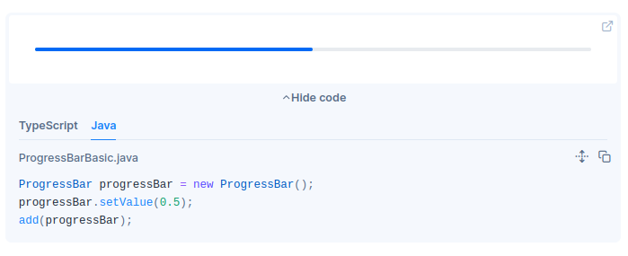
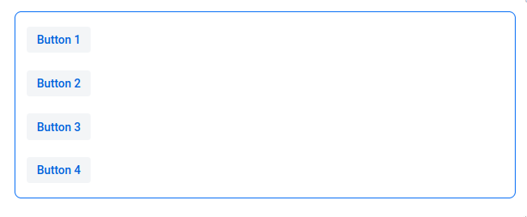
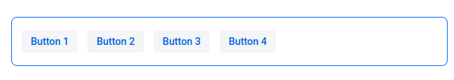
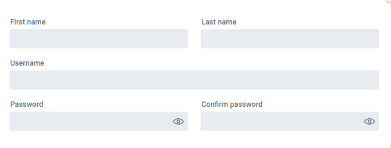
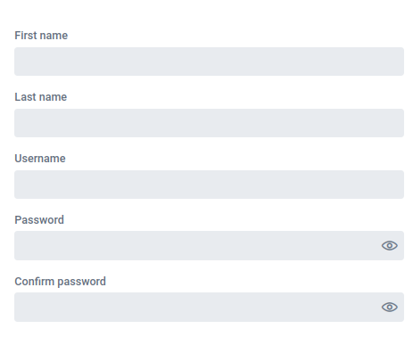

Lektion 4.3 — Teil 4: Webanwendungen mit Vaadin
Komponenten & Layouts
Lernziele
- die wichtigsten Eingabekomponenten von Vaadin kennen und passend auswählenAbschnitt 1
- weitere Komponenten wie Tabs, TreeGrid und ProgressBar einordnenAbschnitt 1
- Komponenten mit
VerticalLayoutundHorizontalLayoutanordnen und ausrichtenAbschnitt 2 - mit
FormLayoutresponsive Formulare mit mehreren Spalten bauenAbschnitt 3 - Layouts ineinander schachteln und Daten zwischen Formular und Model-Objekt austauschenAbschnitt 2
1 — Eingabekomponenten
Die wichtigsten Komponenten in Formularen zeigt die folgende Tabelle (Quelle: vaadin.com/docs/latest/components).
| Component | Usage recommendations | Java-Klasse |
|---|---|---|
| Text Field | Basic single-line text input. | TextField |
| Text Area | Multi-line text input, for values that aren't expected to fit on a single line, or when manual line breaks need to be supported. | TextArea |
| Email Field | For email addresses. | EmailField |
| Number Field | Numeric-only input, such as counts, measures, or monetary values. | NumberField, IntegerField |
| Password Field | Optionally masked password entry. | PasswordField |
| Date Picker | Date entry with keyboard or a calendar picker. | DatePicker (→ LocalDate) |
| Time Picker | Selecting a time of day; resolution range from hours to milliseconds. | TimePicker |
| Date Time Picker | Combined date and time entry. | DateTimePicker |
| Radio Button | Select a single option from a list. Optimal accessibility, as all options are visible without any user action. | RadioButtonGroup |
| Select | Select a value from an overlay. More compact than Radio Buttons. | Select |
| Combo Box | Select a value from a filterable overlay. Appropriate for large sets of options. Supports lazy loading and entry of custom values. | ComboBox |
| Checkbox | For selecting multiple options from a list, or a single binary toggle. | Checkbox, CheckboxGroup |
So erscheinen die Komponenten im Formular einer Anwendung (Bilder aus der Vaadin-Dokumentation):



TextField firstName = new TextField("First name"); // Label im Konstruktor
firstName.setPlaceholder("z. B. Grace");
ComboBox<Employee.Role> role = new ComboBox<>("Role");
role.setItems(Employee.Role.values()); // Auswahl aus dem enum
DatePicker birthday = new DatePicker("Birthday");
IntegerField salary = new IntegerField("Salary");
salary.setMin(1500);
Checkbox subcontractor = new Checkbox("Subcontractor");
String name = firstName.getValue(); // Werte auslesen
LocalDate datum = birthday.getValue(); // kann null sein!Neben den Eingabeelementen (Input Components) gibt es zahlreiche weitere Komponenten, etwa Tabellen bzw. Baumdarstellungen, Karteikarten (Tabs) oder Fortschrittsbalken:



Bevor wir Formulare und Tabellen näher betrachten, wenden wir uns den Layout-Komponenten zu.
2 — Layouts
Layouts positionieren die Eingabeelemente. Die Herausforderung: Layouts, die auf unterschiedlich großen Bildschirmen sinnvoll skalieren – beim Vergrößern und Verkleinern sollen die Elemente mitwandern bzw. neu angeordnet werden. Oberflächen entstehen, indem Komponenten in Layouts verankert und Layouts ineinander geschachtelt werden (Darstellung nach vaadin.com/docs/latest/components/basic-layouts).
Das VerticalLayout ordnet seine Elemente in einer Spalte von oben nach unten an. Die Breite ist stets 100 %, die Höhe richtet sich nach den enthaltenen Elementen und den Einschränkungen übergeordneter Layouts.
VerticalLayout layout = new VerticalLayout();
layout.add(new Button("Button 1"));
layout.add(new Button("Button 2"));
layout.add(new Button("Button 3"));
layout.add(new Button("Button 4"));
Ebenso können Elemente horizontal angeordnet werden:
HorizontalLayout layout = new HorizontalLayout();
layout.setPadding(true);
layout.add(new Button("Button 1"));
layout.add(new Button("Button 2"));
layout.add(new Button("Button 3"));
layout.add(new Button("Button 4"));
Die Ausrichtung innerhalb des Layout-Containers legt layout.setAlignItems(alignment); fest; die Werte sind STRETCH (Standard), START, CENTER, END und BASELINE.
| Methode | Wirkung |
|---|---|
setAlignItems(Alignment.CENTER) | Ausrichtung quer zur Layout-Richtung |
setJustifyContentMode(JustifyContentMode.END) | Verteilung entlang der Layout-Richtung (z. B. Buttons rechtsbündig) |
setSpacing(true/false), setPadding(true/false) | Abstand zwischen den Elementen bzw. zum Rand |
setFlexGrow(1, komponente) | Komponente nimmt den restlichen Platz ein |
setWidthFull(), setWidth("80%"), setSizeFull() | Größe der Komponente |
Vertical- und HorizontalLayout sind intern CSS-Flexbox-Container – die Begriffe align-items, justify-content und flex-grow stammen direkt aus CSS.
3 — FormLayout: responsive Formulare
Das FormLayout ermöglicht responsive Designs für Formulare: Eingabefelder werden auf großen Bildschirmen nebeneinander, auf kleinen untereinander dargestellt.
TextField firstName = new TextField("First name");
TextField lastName = new TextField("Last name");
TextField username = new TextField("Username");
PasswordField password = new PasswordField("Password");
PasswordField confirmPassword = new PasswordField("Confirm password");
FormLayout formLayout = new FormLayout();
formLayout.add(firstName, lastName, username, password,
confirmPassword);
formLayout.setResponsiveSteps(
// Use one column by default
new ResponsiveStep("0", 1),
// Use two columns, if layout's width exceeds 500px
new ResponsiveStep("500px", 2));
// Stretch the username field over 2 columns
formLayout.setColspan(username, 2);Auf einem normalen Bildschirm wird dieses Formular so dargestellt – beim Verkleinern des Fensters ändert sich die Anordnung:


Projektschritt
CompanyView: das Firmenformular
Die erste View mit echten Daten: ein FormLayout mit Firmenname und Adresse, Save/Cancel rechtsbündig in einem HorizontalLayout und ein aufklappbarer Details-Bereich für Speichern/Laden als CSV. Die Daten werden noch „von Hand“ kopiert: readData() (Model → Formular) und storeData() (Formular → Model). Ungültige Eingaben lösen in den Set-Methoden eine CompanyException aus, die als Notification angezeigt wird. Im MainLayout kommt ein Menüeintrag dazu.
src/main/java/at/spengergasse/company/views/company/CompanyView.java Code anzeigen (108 Zeilen)
package at.spengergasse.company.views.company;
import at.spengergasse.company.model.Company;
import at.spengergasse.company.model.CompanyException;
import at.spengergasse.company.views.MainLayout;
import com.vaadin.flow.component.Key;
import com.vaadin.flow.component.button.Button;
import com.vaadin.flow.component.button.ButtonVariant;
import com.vaadin.flow.component.details.Details;
import com.vaadin.flow.component.formlayout.FormLayout;
import com.vaadin.flow.component.notification.Notification;
import com.vaadin.flow.component.orderedlayout.HorizontalLayout;
import com.vaadin.flow.component.orderedlayout.VerticalLayout;
import com.vaadin.flow.component.textfield.TextField;
import com.vaadin.flow.router.PageTitle;
import com.vaadin.flow.router.Route;
/**
* Formular für Name und Adresse der Firma.
* Stand 4.3: Layouts und Komponenten; Daten werden noch "von Hand"
* zwischen Formular und Company-Objekt kopiert (ab 4.4: Binder).
*/
@PageTitle("Company")
@Route(value = "company", layout = MainLayout.class)
public class CompanyView extends VerticalLayout {
private final TextField companyName = new TextField("Company Name");
private final TextField companyAddress = new TextField("Company Address");
private final Button save = new Button("Save");
private final Button cancel = new Button("Cancel");
private final Button saveToFile = new Button("Save Company To File");
private final Button loadFromFile = new Button("Load Company From File");
public CompanyView() {
createLayout();
addHandlers();
readData();
}
private void createLayout() {
setWidth("80%");
FormLayout form = new FormLayout();
form.add(companyName, companyAddress);
save.addThemeVariants(ButtonVariant.LUMO_PRIMARY);
HorizontalLayout buttons = new HorizontalLayout(save, cancel);
buttons.setJustifyContentMode(JustifyContentMode.END);
buttons.setWidthFull();
// aufklappbarer Bereich für die Datei-Funktionen
Details fileHandling = new Details("Save/Load Company to/from File",
new HorizontalLayout(saveToFile, loadFromFile));
fileHandling.setOpened(false);
add(form, buttons, fileHandling);
}
private void addHandlers() {
save.addClickListener(e -> storeData());
save.addClickShortcut(Key.ENTER);
cancel.addClickListener(e -> readData());
cancel.addClickShortcut(Key.ESCAPE);
saveToFile.addClickListener(e -> saveCompanyToFile());
loadFromFile.addClickListener(e -> loadCompanyFromFile());
}
// Model -> Formular
private void readData() {
Company company = Company.getInstance();
companyName.setValue(company.getCompanyName());
companyAddress.setValue(company.getCompanyAddress());
}
// Formular -> Model (die Set-Methoden prüfen die Werte!)
private void storeData() {
try {
Company.getInstance().setCompanyName(companyName.getValue());
Company.getInstance().setCompanyAddress(companyAddress.getValue());
Notification.show("Company name and address saved.");
} catch (CompanyException e) {
Notification.show(e.getMessage());
}
}
private void saveCompanyToFile() {
final String filename = "company.csv"; // TODO Dateiname wählbar machen
try {
Company.getInstance().writeToFile(filename);
Notification.show("Company saved to " + filename);
} catch (CompanyException e) {
Notification.show(e.getMessage());
}
}
private void loadCompanyFromFile() {
final String filename = "company.csv";
try {
Company.loadFromFile(filename);
readData();
Notification.show("Company successfully loaded from " + filename);
} catch (CompanyException e) {
Notification.show(e.getMessage());
}
}
}nav.add(
createNavItem("Company", CompanyView.class, VaadinIcon.BUILDING),
createNavItem("About", AboutView.class, VaadinIcon.FILE)
);📁 Stand nach dieser Lektion: beispiele/4.3/
Häufige Fehler
datePicker.getValue().getYear() → NullPointerException, wenn nichts ausgewählt wurde.
Leere Felder liefern bei DatePicker, ComboBox, IntegerField & Co. null (bei TextField den Leerstring). Vor der Verwendung prüfen.
Ein Button verschwindet aus dem ersten Layout, sobald er auch einem zweiten hinzugefügt wird.
Eine Komponente hat genau einen Platz in der Oberfläche. Für zwei Buttons zwei Objekte erzeugen.
Nach „Load Company From File“ zeigt das Formular noch die alten Werte.
Die Felder ändern sich nicht von selbst, wenn sich das Model ändert. Nach dem Laden readData() aufrufen (ab 4.4: binder.readBean(…)).
Wissenskontrolle
Frage 1 Welche Vaadin-Komponente passt für die Eingabe einer ganzen Zahl?
IntegerField akzeptiert nur ganze Zahlen und liefert den Wert als Integer. Für Text gibt es TextField, für Ja/Nein die Checkbox.Frage 2 Wie ordnen VerticalLayout und HorizontalLayout ihre Komponenten an?
Frage 3 Was ist das Besondere an einem FormLayout?
setResponsiveSteps legt man fest, ab welcher Breite wie viele Spalten verwendet werden – am Handy eine, am Bildschirm mehrere.Frage 4 Wie kommen die Werte aus einem Formular ohne Binder in ein Model-Objekt?
setValue() die Felder mit den Werten des Objekts. Das ist bei vielen Feldern mühsam – genau das nimmt ein Binder ab.